7210B60 R.R. BOOT FLOOR SIDE MEMBER
- Path
- Procedures > 72 PANELS AND FRAME > 7210 REMOVING REFITTING > 7210B structure elements-central and rear part > 7210B60 R.R. BOOT FLOOR SIDE MEMBER
- Kind
- repair procedure (removal / refitting; the operation number is the code)
- Applies to
- all engines; all production periods
- Interactive page
- https://sloeber94.github.io/elrnDB-fMltpl/en/#/2892315
Applies to: all engines; all production periods
 Removing
Removing
 Refitting
Refitting- 7210B56 R.R. BOOT/LOAD CARRYING COMPARTMENT FLOOR (partial rear operation)
Move aside fouling parts.
Check if any of the connected parts are deformed by checking body alignment dimensions. Use appropriate measurement tools (reference rigs, templates or gauges).
Straighten the body if necessary.
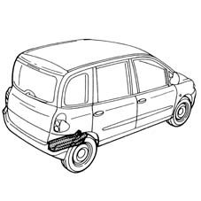
Applies to: all engines; all production periods
Use a rotary brush to remove paint to gain access to the spot welds.
1. Use a circular saw and follow the cutting lines shown in the figure.
2. Cross-section representing the cutting area as a guide to allow the operator to adjust cutting position and depth in order to avoid damage to the underlying panels.
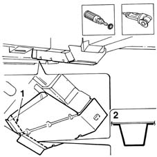
Applies to: all engines; all production periods
1. Use a chamfering machine to crop the weld spots indicated in the figure.
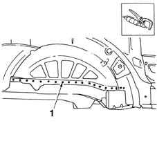
Applies to: all engines; all production periods
1. Drill out the spot welds shown in the figure.
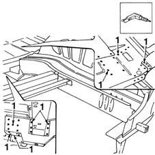
Applies to: all engines; all production periods
1. Use a chamfering machine to remove the weld spots shown in the figure.
2. Drill out the weld spots shown in the figure.
3. Using a hammer and chisel, remove the spot welds and rear floor rail.
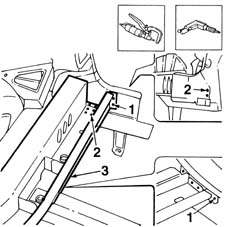
Applies to: all engines; all production periods
Straighten the panel edges using a mallet and profiled stake.
Use a grinding wheel to remove the weld residues.
1. Drill holes in the bodywork as shown in the figure.
2. Apply electroweldable paint on the parts of the bodywork in contact with the rail.
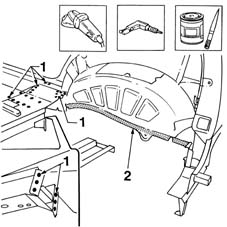
Applies to: all engines; all production periods
Refitting
RemovingUse a grinding wheel to remove the corrosion-proofing from the part.
1. Drill holes in the part as shown in the figure.
2. Apply electroweldable paint finish to the edges in contact with the car.
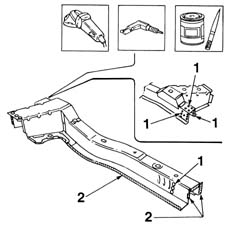
Applies to: all engines; all production periods
1. Position the part correctly on the car and secure using self-locking grippers.
2. Tack the part by carrying out some spot welds.
Remove the self-locking grippers.
Check that the rail is positioned correctly using appropriate measuring instruments (gauges, jigs, etc.).
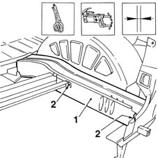
Applies to: all engines; all production periods
1. Use a spot welder to weld the areas shown.
2. Use a MIG welder and fill weld the points shown in the figure.
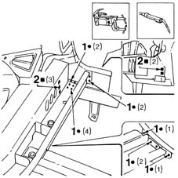
Applies to: all engines; all production periods
1. Use a spot welder and fill weld the holes made previously.
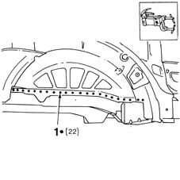
Applies to: all engines; all production periods
1. Use a MIG welder and fill weld the areas shown in the figure.
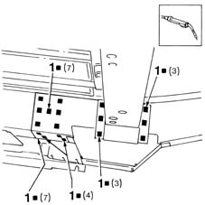
Applies to: all engines; all production periods
1. Use a MIG welder to fill the holes made previously.
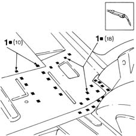
Applies to: all engines; all production periods
Straighten the panel edges using a profiled stake and hammer.
1. Use a grinding wheel to dress the weld and remove residues.
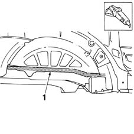
Applies to: all engines; all production periods
Apply rust-proofing to the newly-welded areas.
1. Use sealant to seal the contact areas between car and part.
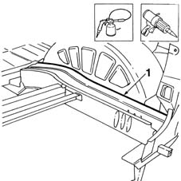
Applies to: all engines; all production periods
Apply paint.
1. Apply wax oil inside the rail.
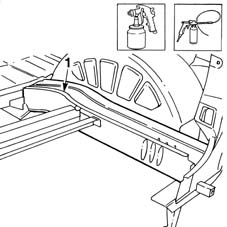
Applies to: all engines; all production periods
- 7210B56 R.R. BOOT/LOAD CARRYING COMPARTMENT FLOOR (partial rear operation)
Refit all fouling parts.